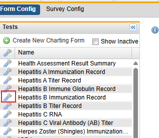

Custom charting forms can be viewed from the Client Configuration tab.
To View a Charting Form:
On theClient Config page, search for the charting form of interest in the Tests panel (left navigational panel).
Click the Configure icon in front of the charting form.

The Form Window opens with three tabs at the top of the window: View Test, Show Level, and Validate.
View Test - Allows you to see what participants will see in EHS Manager. It is how the charting form will look when it is being completed by the participant.
Show Level - You can view the Test at the level you are interested in viewing the form.
The Group level opens the test by lead group questions.
The Questions level opens at the question level and includes Group questions.
The Answers level opens the test fully at the answer level so you can see all Group, Questions and Answers.
Validate –Is primarily used for internal purposes and provides validation check status and Flex Codes attached to specific questions.